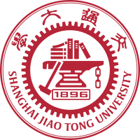

My Educational Background
Undergradute
University of Michigan - Shanghai Jiao Tong University Joint Institute (UM-SJTU JI) B.S.E. in Electrical and Computer Engineering Sept 2016-Aug 2020 (expected)
Graduate
University of Michigan School of Information (UMSI)M.S. in Data Science Sept 2019-Mar 2021 (expected)
About me
I'm currently participating in an exchange program between Shanghai Jiao Tong University (SJTU) and UMSI. Thanks to the cooperation between these two prestigious universities, I'm now earning graduate-level credits that can be transferred as equivalent undergraduate credits. In this way, I need to spend only 3 years for my undergradute degree and another 2 years for my graduate degree.
An Introduction of SJTU
Shanghai Jiao Tong University (SJTU) was found in 1896. It is one of the top universities in mainland China. According to US News Ranking, it ranks No. 4 in China, No. 14 in Asia, and No. 136 globally. SJTU is famous for subjects like CS (Computer Science), ME (Mechanical Engineering) and ECE (Electrical and Electronic Engineering). SJTU encourages students to go global, therefore, it is actively cooperating with foreign universities, such as University of Michigan. The two universities collectively established University of Michigan - Shanghai Jiao Tong University Joint Institute (UM-SJTU JI), which features American style of higher education , and was accreditted by Accreditation Board for Engineering and Technology (ABET) on its ECE and ME program.
My study at UM-SJTU JI began in 2016. I majored in ECE. During my undergraduate study, I learned basic programming techiniques, and developed an interest in writing programs to solve practical problems, such as finding precious clues from huge amount of data. Therefore, I decided to apply for UMSI to further my study in data science.